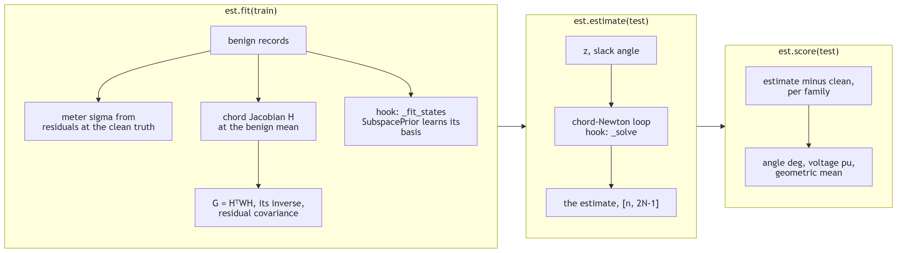

Beating WLS: state estimation with the SDK¶
Measurements in, state out, better than weighted least squares on the public test cases. Runs off
a shard download; pip install "fdia-graph[se]".

Baseline first¶
import fdia_graph as fg
from fdia_graph.se import WLS
train, test = fg.load("ieee14", split="train"), fg.load("ieee14", split="test")
wls = WLS().fit(train)
xhat = wls.estimate(test) # [n, 2N-1] = [theta rad (non-slack) | V pu (all buses)]
print(wls.score(test).geo) # angle_mae_deg 0.108, voltage_mae_pu 6.06e-4
fit() learns |
estimate() returns |
|---|---|
per-meter error scales: RMS of benign residuals at the shard's clean truth |
the classical 2N-1 state, every voltage magnitude and every non-slack angle |
| the chord Jacobian at the benign mean state | already in the truth's angle frame: the slack angle is pinned per record to clean[slack] (ds.slack) |
The better estimator¶
from fdia_graph.se import SubspacePrior
est = SubspacePrior(rank_frac=0.2, reweight="huber", c=1.5).fit(train)
print(est.score(test).geo) # angle_mae_deg 0.059, voltage_mae_pu 1.47e-4
| piece | does | why it helps |
|---|---|---|
| prior | restricts the estimate to the low-rank subspace benign operation occupies (SVD of the training states) | learns generator voltage setpoints from history instead of re-estimating them from noisy meters every scan |
| Huber | down-weights measurements the physics cannot explain | rejects in-place meter corruption |
| together on IEEE-14 test | 45% lower angle error, 76% lower voltage error than WLS | geometric mean over the seven record classes, v0.7.2 data |
Validation-selected hyperparameters from the estimation paper:
| system | rank_frac |
Huber c |
ResidualRemoval threshold |
|---|---|---|---|
| ieee14 | 0.20 | 1.5 | 4.0 |
| ieee118 | 0.50 | 2.5 | 5.0 |
| ieee300 | 0.50 | 6.0 | none helps |
What to expect per family¶
| records | behaviour | why |
|---|---|---|
Ad bias, As scaling, Ar replay |
improve a lot | meters corrupted in place, which robust weighting exists to reject |
Aq, At, Al (stealthy) |
near parity for every estimator | a physically valid state inside the learned subspace; no single-scan method can reject it |
| benign | improves on the larger systems, can lose slightly on ieee14 | the baseline is already at the noise floor there |
Full per-family table and figures: ../se/README.md.
Your own estimator¶
Subclass SEBase and override one hook; the rest is shared, so comparisons are estimator against
estimator.
| hook | does |
|---|---|
_fit_states(x_benign) |
learn anything from the benign training states |
_basis() |
a [2N-1, K] basis that restricts the state space, or None for the full state |
_solve(z, thsl) |
the per-batch solve; thsl is the per-record slack angle reference |
Inside _solve: self._w_solve(z, w, thsl) is the divergence-guarded weighted iteration,
self._nres(x, z, thsl) the normalized residuals, and formulas.estimation holds every equation
(huber_weights, wls_step, normalized_residual, ...).